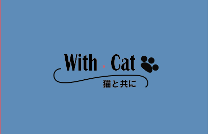

04
名刺デザイン

作品について
猫カフェをイメージして制作しています。こちらは、裏です。
見やすさと印象に残るデザインを意識して制作した 名刺デザインです。 文字の大きさや配置、色の組み合わせを工夫し、 必要な情報が分かりやすく伝わるようにしました。
シンプルな中にも自分らしさを感じられるように、 全体のバランスや余白を意識しながら制作しました。
使用ツール：Illustrator

猫カフェをイメージして制作しています。こちらは、裏です。
見やすさと印象に残るデザインを意識して制作した 名刺デザインです。 文字の大きさや配置、色の組み合わせを工夫し、 必要な情報が分かりやすく伝わるようにしました。
シンプルな中にも自分らしさを感じられるように、 全体のバランスや余白を意識しながら制作しました。
使用ツール：Illustrator